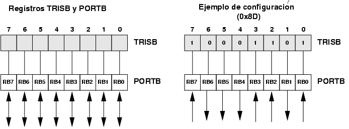
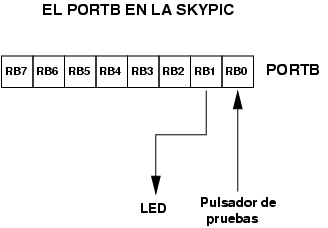

|
Taller de Robótica UCA 2005. SESION 3. Explicación del “hola mundo” |
Empezar a familiarizarse con el PIC y con su programación en C.
Aquí está recopilado el programa “hola mundo”. Para entender su funcionamiento sólo necesitamos abrir el fichero ledon.c con el editor.
|
Descarga de ficheros |
|
Programa hola-mundo (usuarios de linux) con Makefile y proyecto para anjuta |
|
|
Programa hola-mundo (usuarios de Windows) [FALTA] |
|
|
Las fuentes del “hola mundo” |
|
|
El “hola mundo” ejecutable, para descargar en el robot |
Aquí está el programa ledon.c en html para verlo mejor con el navegador.
|
/*************************************************************************** */ |
Cabeceras
Todos los programas empezarán con las siguientes lineas, que indican el tipo de PIC a utilizar. Realmente el que nosotros estamos utilizando es el 16f876A, pero todavia no está implementado en la versión 2.5.1 del SDCC. Sin embargo, es 100% compatible con el 16F877, por lo que no hay problemas.
|
//-- Especificar el pic a emplear |
El led de la skypic
El PIC 16f876A tiene 3 puertos de entrada/salidas digitales: el A, B y C. El puerto B es donde está conectado el led de la skypic. Son 8 bits independientes, que se pueden configurar para funcionar como entrada o salida. Por defecto están configurados como entradas.
El LED de la skypic está conectado al Bit 1 (Los bits se empiezan a numerar desde el bit 0 hasta el bit 7). Para encender el led hay que poner a '1' el bit 1, o lo que es lo mismo, enviar el valor 0x02 al puerto B.
Esto lo definimos con la constante LED, que indica dónde está conectado el led.
|
//-- Definiciones |
Comienzo del programa
La línea void main(void) indica el comienzo de la la función principal, que se empezará a ejecutar en cuanto arranque el PIC. Se ejecutará todo el código que está entre llaves.
El registro TRISB permite configurar los bits del puerto B, para que sean de entrada o salida. Un bit de TRISB puesto a 0 indica que el pin correspondiente del puerto B será de salida, y un 1 indica que será de entrada.
Lo primero que se hace es configurar el puerto B para que el bit B1, el que está conectado al led, sea de salida. Esto se podría hacer de una forma más sencilla así:
TRISB=0x00;
que pone el puerto B entero de salida. Sin embargo, en la manera en que está hecho en el programa ledon.c, sólo se pone a 0 el Bit 1 del registro TRISB, dejando el resto de bits sin alterar. Esto es muy útil cuando se quiere trabajar con bits independientes unos de otros.
Se está utilizando la notación abreviada. La línea sería equivalente a esto:
TRISB = TRISB & ~LED;
~ es el operador de negación de bits.
& es la operación lógica AND realizada bit a bit
|
void main(void) |
Activando el LED
El registro PORTB nos permite enviar información por el puerto B. Cualquier valor que escribamos en él, saldrá por los bits del puerto B del PIC y se traducirá en que saldrán voltajes por el conector CT2 de la Skypic, siempre y cuando lo hayamos configurado como puerto de salida. Un bit a '1' se corresponde con un valor de 5v y un bit a 0 con 0v.
Para encender el led podríamos haber hecho esto:
PORTB=0x02
Esto activa el Bit 1 y deja el resto a 0. Por el conector de salida saldrían 5v hacia el led y 0v por el resto de pines.
Sin embargo, en ciertas aplicaciones nos interesa activar sólo un bit, dejando el resto sin alterar. Así es como se hace en el programa ledon.c.
|
//-- Activar el led |
La instrucción sería equivalente a esta: PORTB = PORTB | LED, donde el símbolo | es el operador OR lógico.
Finalizando
El microcontrolador PIC nunca para de ejecutar instrucciones, mientras esté alimentado. Por eso finalizamos el programa con un bucle infinito. Dejamos al micro eternamente dando vueltas en ese bucle, hasta que alguien pulse el reset o quite la alimentación. Es una manera de tener “controlado” al microcntrolador.
|
//-- Bucle infinito |
El puerto B es un puerto digital de 8 bits, cada uno de cuyos bits es configurable para entrada o salida. Los bits se denotan RB0, RB1,...,RB7. El sentido de cada uno de los bits de este puerto está determinado por el valor de los bits del registro TRISB. Cada uno de ellos controla el sentido de uno de los bits del puerto B, como se muestra gráficamente en la figura de la izquierda.
En la derecha se muestra un ejemplo de configuración. Se almacena el valor 0x8D hexadecimal en el registro TRISB, que se corresponde con el valor en binario 10001101. Los bits de TRISB que están a '1' configura el bit correspondiente del puerto B para que sea de entrada. Los bits que están a '0' lo configuran para salida.
|
 |
En la tarjeta Skypic hay un pulsador de pruebas (el que está al lado del reset) y un led, conectados a los bits RB0 y RB1 respectivamente. Por ello, si se quiere acceder al led, habrá que configurar el bit RB1 de salida. Si se quiere leer del pulsador, habrá que configurar el RB0 como entrada.
|
 |
A través del puerto B podemos enviar y recibir información digital.
Para sacar información al exterior escribiremos en el registro PORTB
Para leer información leeremos el registro PORTB
Para configurar los bits como entradas o salidas utilizaremos el registro TRISB
Para activar uno o varios bits de un registro REG, sin alterar el resto utilizamos esta intrucción: REG|=VALOR
Para poner a cero uno o varios bits de un registro REG, sin alterar el resto, utilizamos la instrucción: REG&=~VALOR;
En la programación del robot estaremos constantemente leyendo bits de entrada del puerto B (sensores) y escribiendo en bits de salida (para mover los motores).